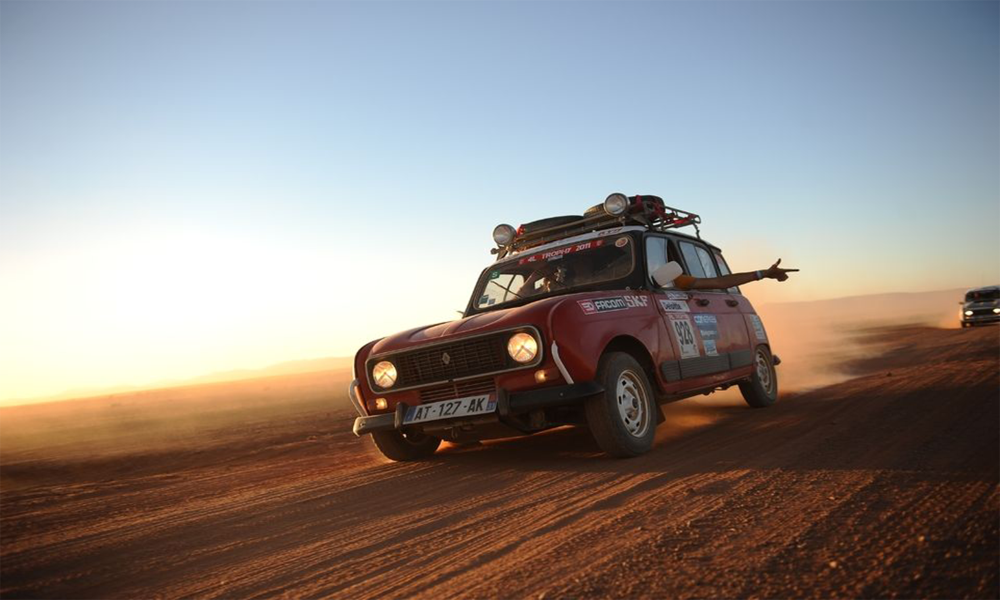

JOUR 1
Ça y est, c'est le grand jour ! Aujourd'hui c'est le départ de la grande aventure. Après avoir bien préparé nos affaires, nous les membres de l'équipe 507 sommes très pressés et surtout très enthousiastes à l'idée de commencer le voyage. Vous pourrez suivre nos aventures grâce à ce journal de bord mis à jour chaque soir. Alors ne ratez rien de la 21ème édition et vivez-vous aussi l'aventure à travers nos histoires.

Ce matin après un réveil plutôt matinal nu nous sommes rendus au point de départ, la Halle d'Iraty dans le sud de la France où nous avons pu rencontrer beaucoup d'autres participants autour d'une petite collation. Fût ensuite prononcé un discours d'encouragement puis nous nous sommes finalement mis en route vers 13h00. Nous souhaitons remercier nos sponsors sans qui cette équipe n'aurait pas vu le jour. Après avoir roulé toute la journée dans une très bonne ambiance nous avons fait halte vers...afin d'y passer la nuit. Cette première journée fût remplie de bonnes sensations, il y a beaucoup de convivialité entre les différentes équipes ce qui rend la course très agréable. L'équipe 507 se couche avec des étoiles plein les yeux, impatiente de se réveiller demain et de poursuivre.
JOUR 2
Nous nous réveillons peu reposés à l'aube de ce deuxième jour, mais sommes toujours grisés par cette envie d'aventure. Après avoir très vite petit-déjeuné, nous voilà parés à avaler des kilomètres de routes ! Nous espérons pouvoir devancer les équipages avec qui nous avons passé la nuit. La compet', il n'y a que ça de vrai !
C'était une journée riche en émotion mais au bilan très mitigé : nous sommes bien derrière les autres participants, faute à un pneu arrière gauche crevé. Bien heureusement, nous avions une roue de secours et 30 mins à peine furent nécessaires pour finir les réparations. Nous nous retrouvons désormais avec les équipages qui eux aussi ont été victimes de soucis techniques dès le départ. Nous avons décidé de bivouaquer tous ensemble ce soir, nous avons hate ! Quoi qu'il en soit, rassurez-vous ! N'est pas né celui qui mettra des bâtons dans les roues de l'équipage 507 !
JOUR 3
L'équipe 507 est repartie pour le 3ème jour de course ! Nous avons passé une bonne nuit et plaçons dans ce troisième jour tout nos espoirs. Nous avons pris un peu de retard et il ne tient qu'a nous de la rattraper ! Alors attachez vos ceintures nous sommes partis.

C'est une folle journée qui se termine ! Nous avons roulé à vive allure jusqu'à midi au coude à coude avec l'équipage 256, nous avons mangé ensemble et lorsque nous sommes repartis ils se sont embourbés. Nous les avons aidés et ils nous ont accordé un peu d'avance par fair-play. C'est la pédale au plancher que nous avons passé l'après-midi, et avons pu profité d'un magnifique soleil couchant. Résultats : nous avons rattrapé un peu de notre retard, mais pas assez à notre goût. Nous esperons passer une bonne nuit et dès les premières lueurs nous repartirons. Gloire à l'équipage 507 !